Utkontraktering er en forretningsstrategi hvor virksomheter overlater spesifikke oppgaver, funksjoner eller prosesser til eksterne leverandører. Dette kan omfatte alt fra regnskapsføring og bokføring til IT-tjenester, kundeservice og produksjon.

Definisjon av Utkontraktering
Utkontraktering, også kjent som outsourcing, innebærer at en virksomhet inngår avtale med en ekstern leverandør for å utføre oppgaver som tidligere ble gjort internt. Dette kan være:
- Fullstendig utkontraktering - hele funksjoner overføres til eksterne leverandører
- Delvis utkontraktering - kun deler av en funksjon outsources
- Selektiv utkontraktering - spesifikke oppgaver eller prosesser outsources
Forskjell mellom Utkontraktering og Innleie
Det er viktig å skille mellom utkontraktering og innleie av arbeidskraft:
| Aspekt | Utkontraktering | Innleie |
|---|---|---|
| Kontroll | Leverandør har ansvar for utførelse | Oppdragsgiver styrer arbeidet |
| Risiko | Overføres til leverandør | Forblir hos oppdragsgiver |
| Resultat | Leverandør garanterer resultat | Kun arbeidskraft leveres |
| Juridisk ansvar | Hos leverandør | Hos oppdragsgiver |
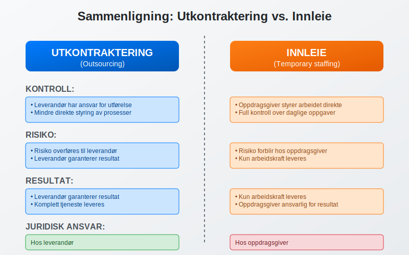
Typer Utkontraktering
Regnskapsmessig Utkontraktering
Dette er særlig relevant for mindre foretak som ikke har ressurser til egen regnskapsavdeling:
Bokføringstjenester
- Løpende bilagsføring
- Bankavstemming
- Kundefordringer og leverandørgjeld
- MVA-rapportering
Regnskapsanalyse
- Månedlige regnskapsrapporter
- Budsjettoppfølging
- Likviditetsstyring
- Økonomisk rådgivning
Årsoppgjør og Rapportering
- Utarbeidelse av årsregnskap
- Skatteoppgjør
- Rapportering til offentlige myndigheter
- Compliance og regelverksetterlevelse
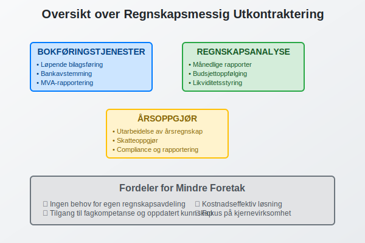
IT-utkontraktering
Mange virksomheter velger å outsource IT-funksjoner:
- Systemdrift - servere, nettverk og infrastruktur
- Applikasjonsutvikling - utvikling av programvare og systemer
- Brukerstøtte - helpdesk og teknisk support
- Sikkerhet - cybersikkerhet og databackup
Produksjonsutkontraktering
Spesielt vanlig i produksjonsbedrifter:
- Komponentproduksjon - deler av produksjonsprosessen
- Logistikk - lagring og distribusjon
- Kvalitetskontroll - testing og sertifisering
- Emballasje - pakking og merking
Kundeserviceutkontraktering
- Telefonsupport - kundehenvendelser og support
- Chat og e-post - digital kundeservice
- Teknisk support - produktstøtte og feilsøking
- Salgsaktiviteter - telemarketing og oppfølging
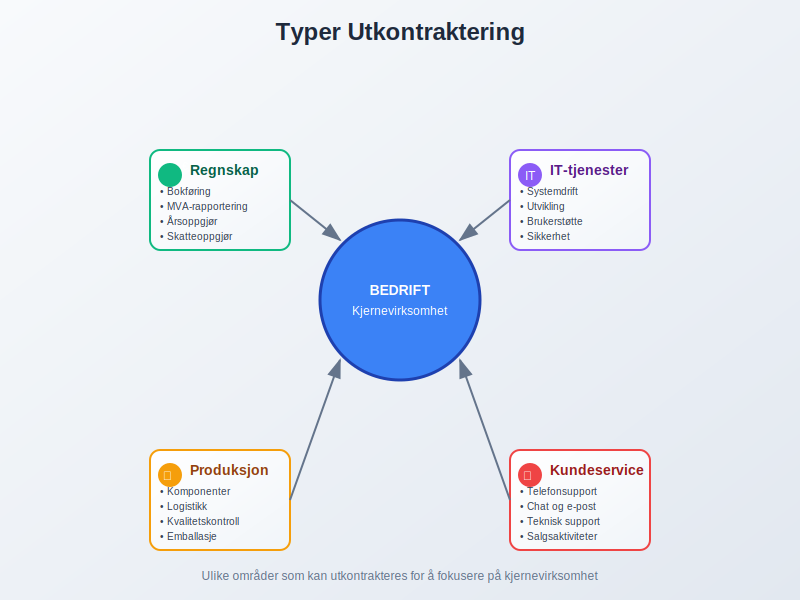
Fordeler med Utkontraktering
Kostnadsbesparelser
Utkontraktering kan gi betydelige kostnadsreduksjoner:
- Reduserte lønnskostnader - ingen behov for egne ansatte
- Lavere infrastrukturkostnader - mindre behov for lokaler og utstyr
- Skalering av kostnader - betaler kun for det som brukes
- Eliminering av rekrutteringskostnader - leverandør håndterer bemanning
Kostnadsammenligning
| Kostnadselement | Intern drift | Utkontraktering |
|---|---|---|
| Lønn og sosiale kostnader | 100% | 0% |
| Lokaler og utstyr | 100% | 20-30% |
| Opplæring | 100% | 0% |
| Systemkostnader | 100% | 30-50% |
| Totale kostnader | 100% | 40-70% |
Tilgang til Ekspertise
Eksterne leverandører tilbyr ofte spesialisert kompetanse:
- Fagekspertise - dybdekunnskap innen spesifikke områder
- Oppdatert kunnskap - følger med på regelverksendringer
- Best practices - erfaring fra mange kunder
- Teknologisk kompetanse - tilgang til moderne systemer
Fokus på Kjernevirksomhet
Utkontraktering frigjør ressurser til strategiske aktiviteter:
- Mer tid til salg og markedsføring
- Fokus på produktutvikling
- Strategisk planlegging
- Kundeoppfølging
Fleksibilitet og Skalering
- Rask oppskalering ved økt aktivitet
- Nedskalering i roligere perioder
- Tilgang til ressurser uten langsiktige forpliktelser
- Geografisk fleksibilitet - leverandører kan være lokalisert hvor som helst
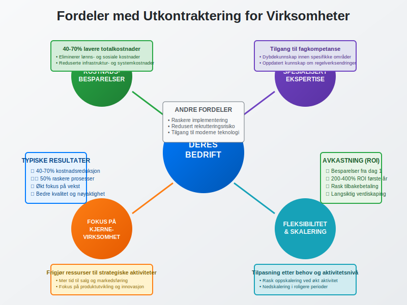
Ulemper og Risikoer
Tap av Kontroll
Utkontraktering kan medføre redusert kontroll:
- Mindre direkte styring av prosesser
- Avhengighet av leverandør for kritiske funksjoner
- Begrenset innsikt i daglige operasjoner
- Vanskeligere å gjøre raske endringer
Kvalitetsrisiko
- Varierende kvalitet fra eksterne leverandører
- Kommunikasjonsutfordringer kan påvirke resultatet
- Mindre forståelse av virksomhetens spesifikke behov
- Risiko for feil som kan påvirke virksomheten
Sikkerhet og Konfidensialitet
Spesielt kritisk ved utkontraktering av sensitive funksjoner:
Datarisiko
- Tilgang til sensitive data - kundeinfo, finansielle data
- Risiko for datalekkasje eller misbruk
- Compliance-utfordringer - GDPR og andre regelverk
- Backup og gjenoppretting av kritiske data
Forretningshemmeligheter
- Tilgang til strategisk informasjon
- Risiko for konkurranse fra leverandør
- Beskyttelse av immaterielle rettigheter
- Konfidensialitetsavtaler må være på plass
Juridiske Risikoer
- Kontraktsbrudd fra leverandør
- Ansvarsspørsmål ved feil eller mangler
- Regulatoriske krav som må overholdes
- Oppsigelse og overgang til ny leverandør
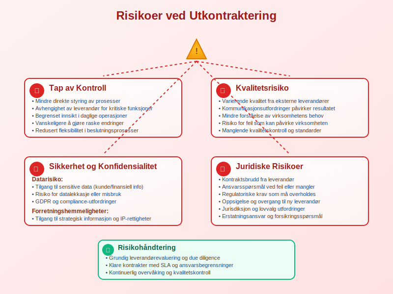
Prosess for Utkontraktering
1. Behovsanalyse
Før utkontraktering må virksomheten gjøre en grundig behovsanalyse:
Kartlegging av Funksjoner
- Identifiser hvilke oppgaver som kan outsources
- Vurder kritikalitet og kompleksitet
- Analyser kostnader ved intern drift
- Beregn potensielle besparelser
Strategisk Vurdering
- Kjernevirksomhet - hva er virksomhetens hovedfokus?
- Konkurransefortrinn - hvilke funksjoner gir konkurransefortrinn?
- Risikotoleranse - hvor mye risiko kan virksomheten akseptere?
- Langsiktige mål - hvordan passer utkontraktering inn i strategien?
2. Leverandørvalg
Kvalifikasjonskriterier
- Faglig kompetanse og erfaring
- Referanser fra lignende oppdrag
- Finansiell stabilitet og soliditet
- Sertifiseringer og kvalitetssystemer
Evalueringsprosess
- Forespørsel om tilbud (RFP - Request for Proposal)
- Vurdering av tilbud mot fastsatte kriterier
- Referansesjekk hos eksisterende kunder
- Forhandlinger om pris og betingelser
- Endelig valg av leverandør
3. Kontraktsinngåelse
Viktige Kontraktselementer
- Tjenestebeskrivelse - detaljert beskrivelse av oppgaver
- Servicenivå (SLA - Service Level Agreement)
- Prising og betalingsbetingelser
- Konfidensialitetsklausuler
- Ansvar og erstatning
- Oppsigelsesbestemmelser
Juridiske Aspekter
- Personvern og GDPR-compliance
- Immaterielle rettigheter
- Underleverandører og deres ansvar
- Jurisdiksjon og lovvalg
4. Implementering
Overgangsplan
- Tidsplan for overføring av oppgaver
- Opplæring av leverandør
- Dataoverføring og systemintegrasjon
- Testperiode før full drift
Kommunikasjon
- Intern kommunikasjon til ansatte
- Ekstern kommunikasjon til kunder og partnere
- Kontaktpunkter og ansvarsfordeling
- Rapporteringsrutiner
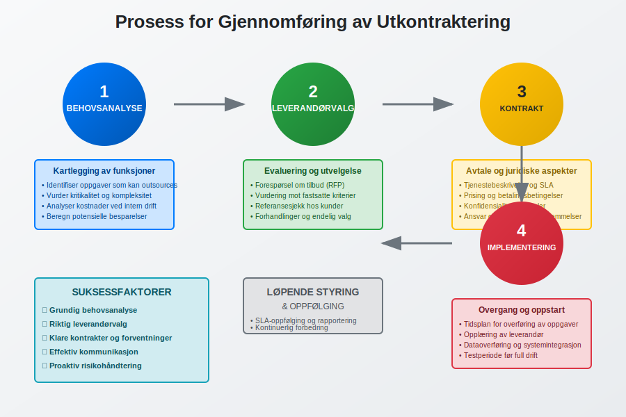
Juridiske Aspekter
Kontraktsrett
Utkontraktering reguleres primært av kontraktsretten:
Avtalefrihet
- Partene kan i utgangspunktet avtale fritt
- Begrensninger i avtaleloven og andre lover
- Urimelige avtalevilkår kan settes til side
- Standardkontrakter vs. individuelt tilpassede avtaler
Kontraktsbrudd
- Mislighold - når leverandør ikke oppfyller sine forpliktelser
- Erstatning for tap som følge av kontraktsbrudd
- Heving av kontrakt ved vesentlig mislighold
- Tvangsfullbyrdelse av kontraktuelle forpliktelser
Arbeidsrett
Ved utkontraktering av oppgaver kan arbeidsrettslige spørsmål oppstå:
Virksomhetsoverdragelse
Hvis ansatte overføres til leverandør:
- Arbeidsmiljøloven kapittel 16 om virksomhetsoverdragelse
- Rettigheter følger med til ny arbeidsgiver
- Informasjons- og drøftingsplikt overfor ansatte
- Beskyttelse mot oppsigelse på grunn av overdragelse
Innleie vs. Utkontraktering
- Innleiereglene gjelder ikke ved ekte utkontraktering
- Instruksjonsrett - hvem styrer arbeidet?
- Integrering i oppdragsgivers virksomhet
- Økonomisk risiko - hvem bærer risikoen?
Personvern (GDPR)
Ved utkontraktering av oppgaver som involverer personopplysninger:
Databehandleravtale
- Behandlingsansvarlig (oppdragsgiver) og databehandler (leverandør)
- Skriftlig avtale som regulerer behandlingen
- Instrukser for hvordan data skal behandles
- Sikkerhetstiltak for å beskytte personopplysninger
Overføring til Tredjeland
- Adequacy decisions - land med tilstrekkelig beskyttelse
- Standard contractual clauses (SCC)
- Binding corporate rules (BCR)
- Risikovurdering av overføring
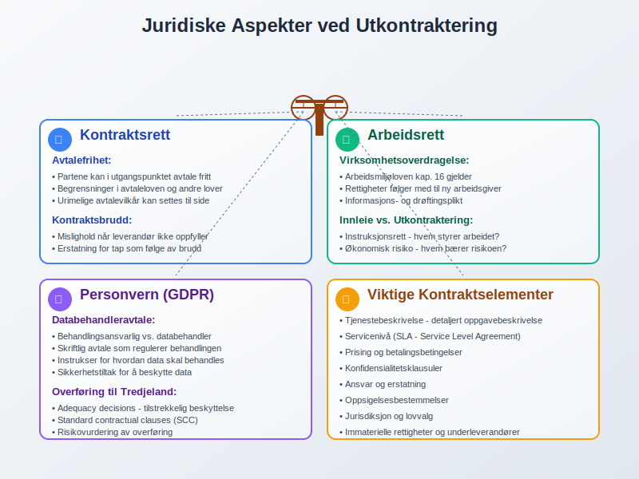
Valg av Leverandør
Evalueringskriterier
Faglig Kompetanse
- Erfaring innen relevant fagområde
- Sertifiseringer og kvalifikasjoner
- Teamets kompetanse og stabilitet
- Oppdatering av kunnskap og ferdigheter
Teknisk Kapasitet
- IT-systemer og infrastruktur
- Integrasjonsmuligheter med eksisterende systemer
- Backup og sikkerhetssystemer
- Skalerbarhet ved endrede behov
Økonomisk Soliditet
- Finansiell stabilitet og lønnsomhet
- Kredittvurdering og rating
- Forsikringsdekning for ansvar og tap
- Langsiktig bærekraft av forretningsmodellen
Referanser og Omdømme
- Kundetilfredshetsundersøkelser
- Referansekunder i lignende bransjer
- Omdømme i markedet
- Klagehistorikk og konflikthåndtering
Due Diligence Prosess
Dokumentgjennomgang
- Selskapsstruktur og eierforhold
- Finansielle rapporter og nøkkeltall
- Forsikringspoliser og dekning
- Compliance-dokumentasjon
Stedlig Inspeksjon
- Besøk hos leverandør
- Møte med nøkkelpersonell
- Gjennomgang av arbeidsplasser og systemer
- Vurdering av sikkerhetstiltak
Referansesjekk
- Kontakt med eksisterende kunder
- Spørsmål om kvalitet, pålitelighet og service
- Evaluering av leverandørens styrker og svakheter
- Vurdering av kundetilfredshet
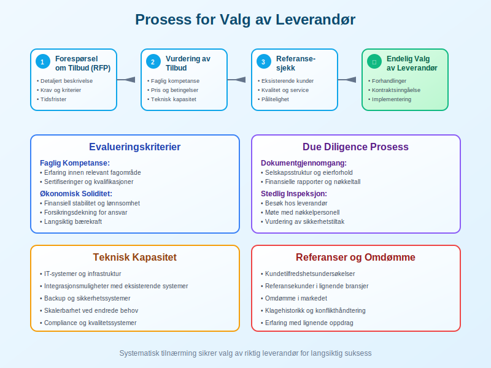
Styring og Oppfølging
Service Level Agreements (SLA)
SLA definerer forventet servicenivå og målbare kriterier:
Ytelsesmål
- Responstid - hvor raskt skal leverandør reagere?
- Oppetid - hvor mye nedetid er akseptabelt?
- Kvalitetsmål - feilrate, nøyaktighet, etc.
- Tilgjengelighet - når skal tjenesten være tilgjengelig?
Måling og Rapportering
- KPI-er (Key Performance Indicators)
- Rapporteringsfrekvens - daglig, ukentlig, månedlig
- Rapporteringsformat og innhold
- Eskalering ved avvik fra målene
Konsekvenser ved Brudd
- Service credits - prisreduksjon ved dårlig ytelse
- Bøter for brudd på SLA
- Rett til oppsigelse ved gjentatte brudd
- Erstatning for tap som følge av dårlig service
Governance-struktur
Styringskomité
- Representanter fra begge parter
- Regelmessige møter for oppfølging
- Strategiske beslutninger om tjenesten
- Konfliktløsning på høyt nivå
Operasjonell Styring
- Daglig kontaktpunkt hos begge parter
- Operasjonelle møter og rapportering
- Problemløsning og forbedringer
- Endringshåndtering
Kontinuerlig Forbedring
- Regelmessig evaluering av tjenestekvalitet
- Identifisering av forbedringsområder
- Implementering av forbedringer
- Benchmarking mot markedsstandard
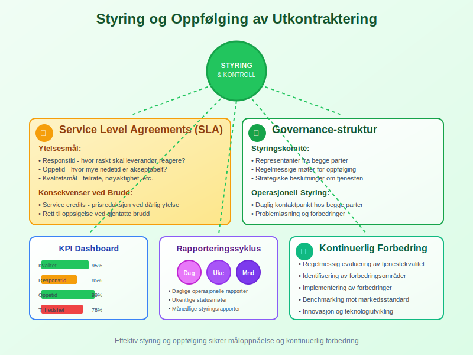
Regnskapsmessige Konsekvenser
Kostnadsføring
Utkontraktingskostnader skal behandles som driftskostnader:
Løpende Kostnader
- Månedlige eller kvartalsvise fakturaer
- Periodisering av kostnader
- Kontering på riktige kostnadskonti
- Budsjettoppfølging og avviksanalyse
Engangskostnader
- Implementeringskostnader - oppsett og overgang
- Opplæringskostnader - intern og ekstern opplæring
- Systemintegrasjon - tekniske tilpasninger
- Juridiske kostnader - kontraktsutarbeidelse
Balanseposter
Fordringer og Gjeld
- Leverandørgjeld for utestående fakturaer
- Forskuddsbetalinger til leverandør
- Depositum eller sikkerhetsstillelse
- Tilgodehavender ved overfakturering
Immaterielle Eiendeler
Ved overføring av systemer eller prosesser:
- Vurdering av overførte eiendeler
- Avskrivning av ikke lenger benyttede systemer
- Goodwill ved virksomhetsoverdragelse
- Utviklingskostnader for tilpasninger
MVA-behandling
Utkontraktingstjenester er normalt MVA-pliktige:
Inngående MVA
- Fradragsrett for MVA på innkjøpte tjenester
- Dokumentasjon gjennom fakturaer
- Periodisering av MVA-fradrag
- Rapportering i MVA-meldingen
Omvendt Avgiftsplikt
Ved kjøp av tjenester fra utlandet:
- Omvendt avgiftsplikt kan gjelde
- Både utgående og inngående MVA
- Spesielle regler for digitale tjenester
- Registrering i VOEC-registeret ved behov
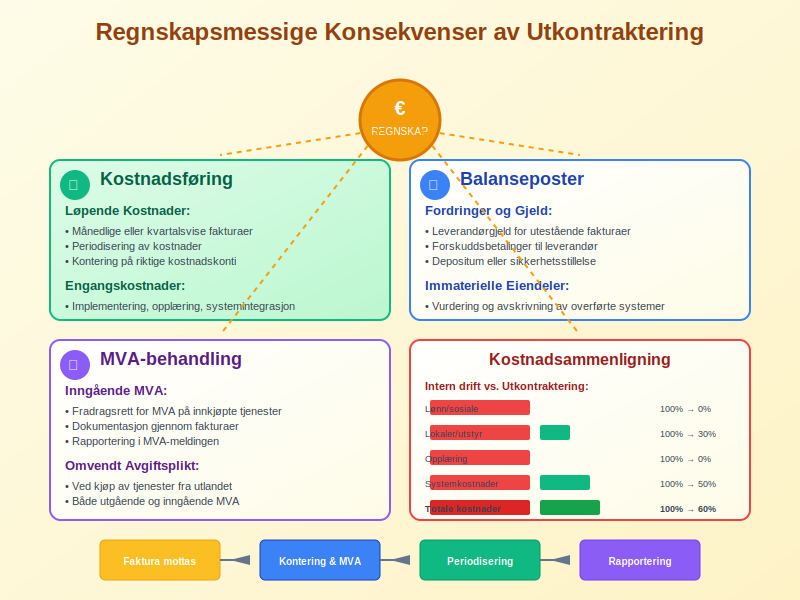
Fremtidige Trender
Digitalisering og Automatisering
Utkontraktingsbransjen påvirkes sterkt av teknologisk utvikling:
Robotisert Prosessautomatisering (RPA)
- Automatisering av repetitive oppgaver
- Reduserte kostnader og økt nøyaktighet
- 24/7 drift uten menneskelig inngripen
- Rask implementering av endringer
Kunstig Intelligens (AI)
- Maskinlæring for forbedret tjenestekvalitet
- Prediktiv analyse for proaktiv problemløsning
- Naturlig språkbehandling for kundeservice
- Automatisk rapportering og analyse
Cloud-baserte Løsninger
- Skalerbarhet og fleksibilitet
- Reduserte infrastrukturkostnader
- Forbedret sikkerhet og backup
- Global tilgjengelighet
Spesialisering og Nisjeområder
- Høyt spesialiserte tjenester innen smale fagområder
- Bransjespesifikke løsninger og ekspertise
- Regulatorisk compliance som spesialområde
- Bærekraft og ESG-rapportering
Nearshoring og Reshoring
- Nearshoring - flytting til nærliggende land
- Reshoring - tilbakeføring til hjemmelandet
- Risikohåndtering og forsyningskjedesikkerhet
- Geopolitiske faktorer påvirker valg
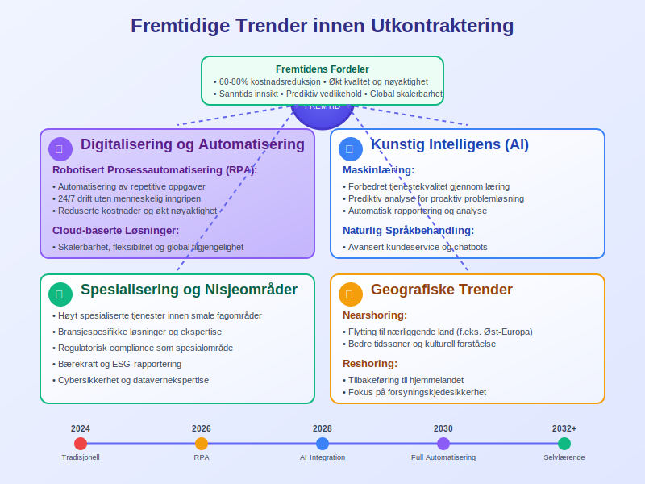
Konklusjon
Utkontraktering kan være en strategisk fordel for virksomheter som ønsker å fokusere på sin kjernevirksomhet samtidig som de oppnår kostnadsbesparelser og tilgang til spesialisert kompetanse. Spesielt innen regnskapsføring og administrative funksjoner kan utkontraktering gi betydelige fordeler for mindre og mellomstore foretak.
Suksessfaktorer
For å lykkes med utkontraktering er det viktig å:
- Gjøre grundige analyser før beslutning
- Velge riktig leverandør basert på objektive kriterier
- Inngå gode kontrakter med klare forventninger
- Etablere effektiv styring og oppfølging
- Håndtere risiko proaktivt
Fremtidsperspektiv
Utkontraktering vil fortsette å utvikle seg med teknologiske fremskritt og endrede markedsbehov. Virksomheter som tar i bruk moderne utkontraktingsløsninger tidlig, vil kunne oppnå konkurransefortrinn gjennom økt effektivitet og reduserte kostnader.
Den viktigste faktoren for suksess er å matche utkontraktingsstrategien med virksomhetens overordnede mål og sikre at leverandørforholdet bygger på gjensidig tillit og forståelse.